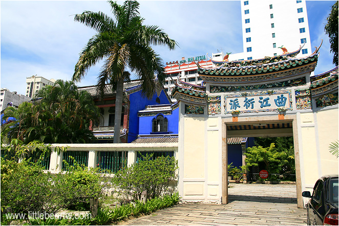
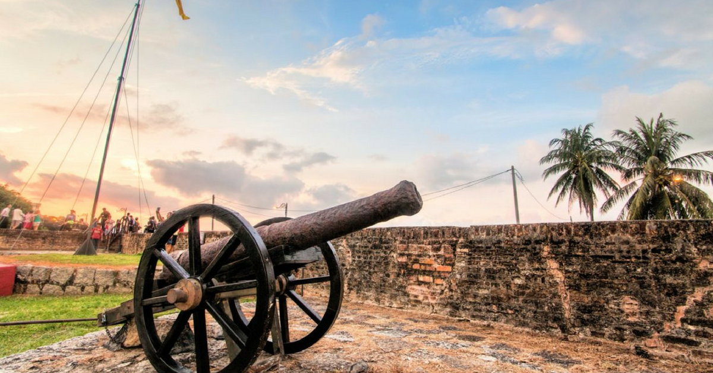

张弼士故居

张弼士故居，又称“蓝屋”，位于马来西亚槟城州乔治市莲花河街，原是中国商人、侨民张弼士的府邸。故居始建于1897年，占地5万3000平方英尺，建筑面积3万4000平方英尺，是马来西亚现存最大的中国园林式住宅。1995年经全面修复，现已成为展览馆。2000年获联合国教科文组织亚太区文物古迹保护奖卓越项目奖。
康华利古堡 – Fort Cornwallis



位于槟城乔治市东北部的康华利古堡于1786年建成。原初这里是莱特船长登陆上岸的地点，后来也被东印度公司作为防御敌人侵略而建。古堡原本是木造的，后来英国殖民政府利用囚犯将其改建成石堡。时至今日城保内仍然可以看到小教堂、囚室、弹药库、大炮等前世纪修建的设施。相传此荷兰大炮有助于生殖能力，所以不乏妇女在炮管内献上鲜花祈子。
龙山堂邱公司 – Khoo Kongsi
槟城龙山堂邱公司藏身于乔治市大铳街，是槟城历史最悠久的家庙，也是马来西亚最大型的华人会馆。祠堂内非常堂皇壮丽，精工雕琢，更仿清朝宫殿设计而建立。据悉邱氏宗族是槟城福建人“五大姓”之一，各个姓在十九世纪中叶起纷纷建立了自己的公司、街屋并以宗祠为中心。虽然已逾百年，但祠堂、附近建筑、大戏台以及排屋等整体格局均保存完整，是一个见证当地华人的历史建筑。
旧关仔角大钟楼 – Queen Victoria Memorial Clock Tower
位于康华利古堡附近的旧关仔角大钟楼，是槟城数一数二的地标性建筑。坐拥百年历史的钟楼混合了英式建筑以及回教摩尔式圆顶，由当地华人富商谢增煜出资建立，并用于纪念英女王维多利亚登基之60周年。后来市政局更为此钟楼增添霓虹灯以及巨形铁槟榔，彰显现代感。尽管现在钟楼已不再使用，其历史价值和纪念意义确实值得令人怀念。
斯里玛哈玛里安曼兴都庙 (Sri Mahamariamman Temple)
从英文翻译而来-乔治市的Arulmigu Sri Mahamariamman寺庙建于1833年，是马来西亚槟城最古老的印度教寺庙，其正门和门面上刻有神灵和女神的雕像。它位于乔治市的皇后街。它也被称为马里安曼神庙或皇后街印度神庙